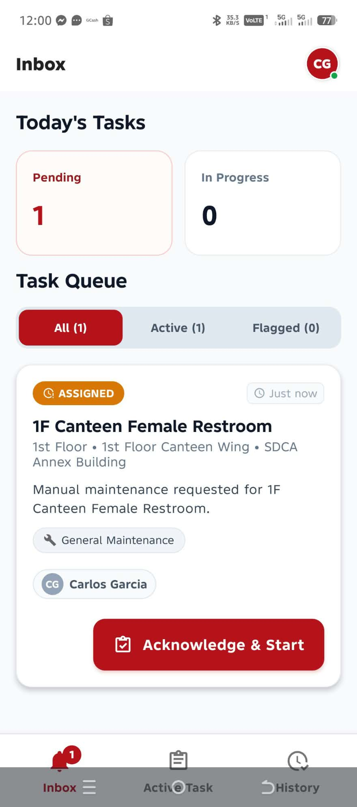
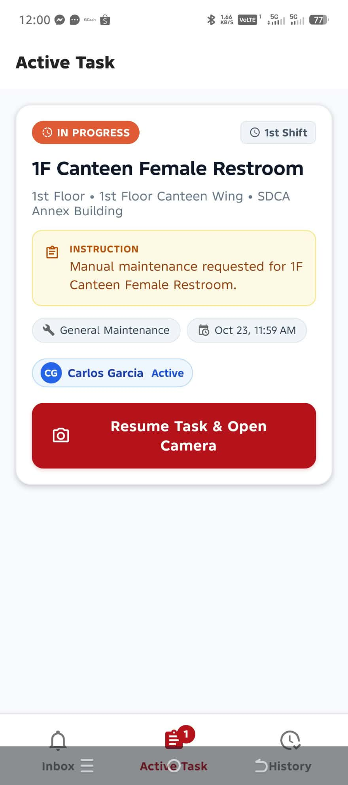
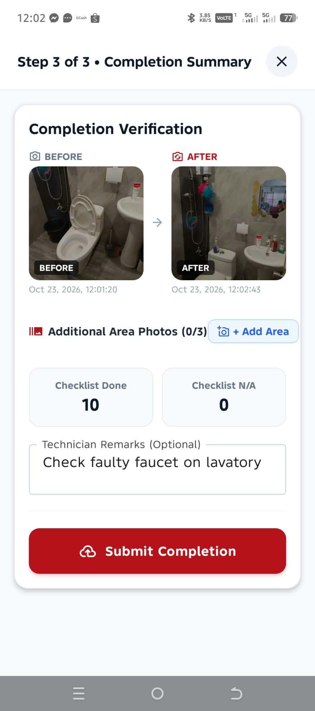
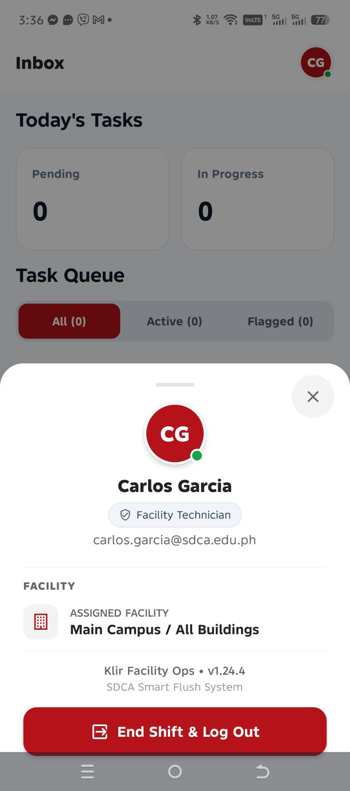
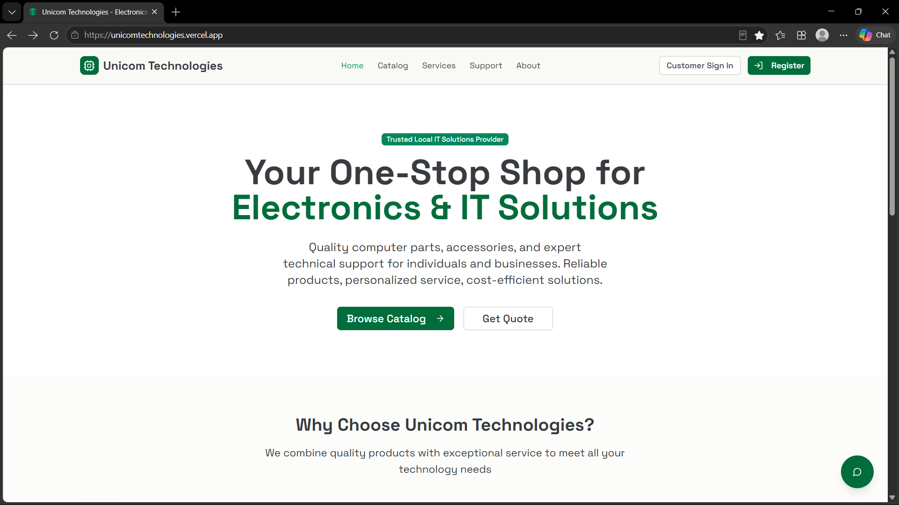
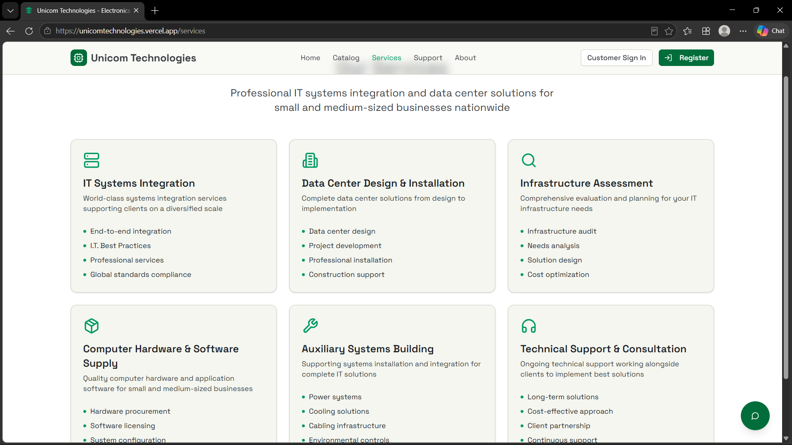
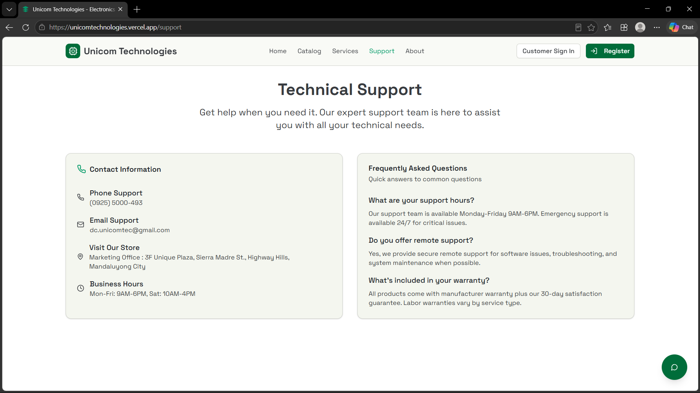
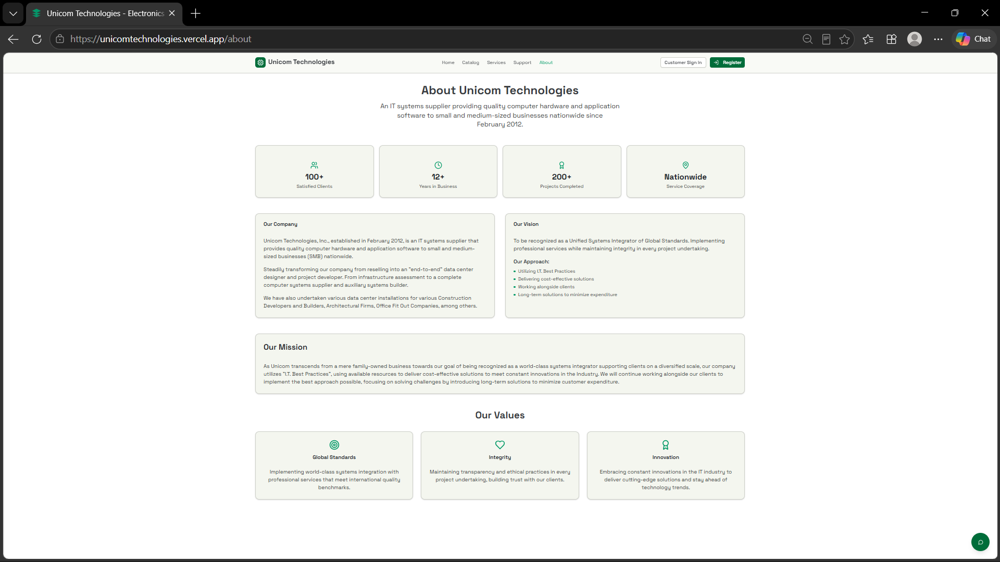
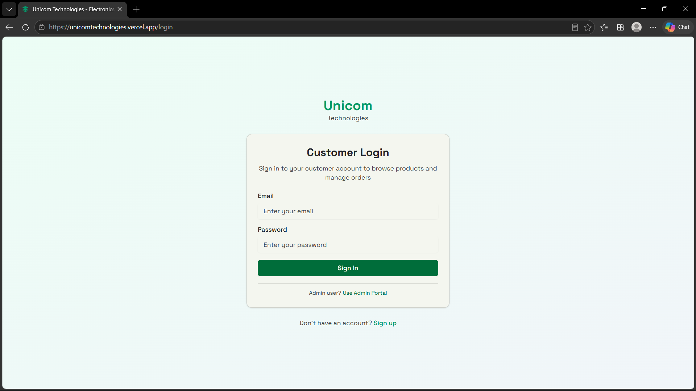

A selection of things I’ve built and the technologies I’ve been learning.
KLIR: An IoT-Based Toilet Sanitation, Analytics, and Predictive Maintenance Management System
Overview
KLIR combines automated restroom hardware with a web-based operations and administration hub. The system is designed to keep the toilet’s local operating sequence available while the cloud services handle device monitoring, configuration, maintenance assignments, analytics, alerts, reporting, and remote administration. The application is being developed as a group Capstone 1 project at St. Dominic College of Asia.
Objectives
Monitor restroom device status, flush activity, water use, and sanitation cycles in real time.
Support device configuration, alerting, analytics, and report or compliance document generation.
Coordinate maintenance tasks and staff while allowing the toilet hardware to continue its local sequence if cloud connectivity is unavailable.
Role & Contributions
Systems analysis and design, feasibility study, and cost analysis.
Designed charts and contributed to the application’s UI/UX.
Prepared project documentation.
Project team: Christian Ivan A. Los Baños, Dennis V. Carlos, James Carl V. Alvarez, Justine M. Lopez, and Maria Rollainne R. Lindog.
IoT deviceMobile maintenanceQR code reportingAutomatic flush and UV-C
KLIR Mobile Application
Built as part of a group Capstone 1 project at St. Dominic College of Asia during the second semester of our third year, the KLIR mobile app supports restroom facility technicians in handling maintenance work. Technicians can review assigned tasks, track active work, complete checklists, attach before-and-after photos, add remarks, and review their task history. The app is part of a developing system that pairs local toilet hardware with cloud-based monitoring, reporting, alerts, task dispatch, and remote administration.
Objectives
Give technicians a mobile inbox for assigned tasks, task status, and priority or location details.
Guide technicians through an active maintenance task and let them record checklist results, photos, and remarks.
Keep a history of completed work while the wider platform supports remote monitoring, alerts, analytics, and task management.
Role & Contributions
Helped develop and refine the project concept.
Prepared project documentation, built frontend features, and assisted with backend development.
Technologies & Components
Mobile framework
React Native with Expo, TypeScript
UI and navigation
React Native Paper (Material Design), React Navigation with role-based tabs and stack routing
Cloud and database
Google Firebase: Native Auth, Firestore, Cloud Storage
Push notifications
Firebase Cloud Messaging (FCM) for task dispatch and leak alerts
Offline storage
Async Storage for offline-first task synchronization in low-signal areas
Camera and media
Photo proof capture, compression, and timestamp watermarking
Biometrics
Fingerprint and Face ID authentication for audit approvals
Reporting
In-app PDF generation and system share sheet integration
Build and testing
EAS for APK builds, Jest, and Maestro end-to-end testing
Project team: Christian Ivan A. Los Baños, Dennis V. Carlos, James Carl V. Alvarez, Justine M. Lopez, and Maria Rollainne R. Lindog.
Status: In progress.

Technician task inbox

Active maintenance task

Task completion and verification

Technician profile
IntelliShield Analytics
Developed as my individual Capstone 1 research project, IntelliShield is a fraud monitoring and risk intelligence platform for importing transaction data and reviewing suspicious activity. Administrators can upload CSV datasets, inspect individual transactions alongside rule risk scores and model fraud probabilities, and compare fraud and legitimate transaction totals. The application combines rule-based checks, behavioral profiling, device and IP velocity signals, Gaussian anomaly analysis, logistic regression, and a neural network to help surface both straightforward and less obvious fraud patterns.
Analytics views summarize model metrics, transaction distributions, fraud triggers, and model performance across training batches. Admins can retrain models with labeled Firestore records, subject to data requirements, while system monitoring tracks upload activity, errors, and accuracy over time. The audit trail records administrative and data-management events and supports date filtering, CSV/PDF export, and printing. Role-based access separates security analyst and administrator capabilities, with user management and audit logging supporting oversight.
Objectives
Import transaction datasets and combine rule-based risk checks with machine learning to flag suspicious activity.
Help analysts investigate patterns through transaction-level risk details, model metrics, threat charts, and batch comparisons.
Support labeled-data review and controlled model retraining while monitoring system errors, uploads, and model performance.
Provide auditable, role-based administration with exportable records for operational review and reporting.
Status: Further real-world data testing and ongoing system updates.
Role & Contributions
Full-stack development, systems analysis, application design, and UI/UX.
Managed database design and usage, with a focus on Firebase free-tier optimization.
Designed role-based access control (RBAC) and audit modules.
A web application for Unicom Technologies, an IT systems supplier serving individuals and small to medium-sized businesses. The site brings its product catalog, systems integration and data center services, customer sign-in, and technical support information into one place.
Application Highlights
Introduce the company and its computer hardware, software, and IT solutions.
Present services including systems integration, data center installation, infrastructure assessment, and technical support.
Provide customer account access alongside support contact details and answers to common questions.
Status: In progress.
Role & Contributions
Systems design and development, UI/UX, and functional testing.
Modified the application based on testing and prepared project documentation.
Technologies & Components
Web applicationFrontendBackendDatabasesRBAC

Homepage

IT services

Technical support

Company profile

Customer sign-in
IT solutionsProduct catalogCustomer portalTechnical support